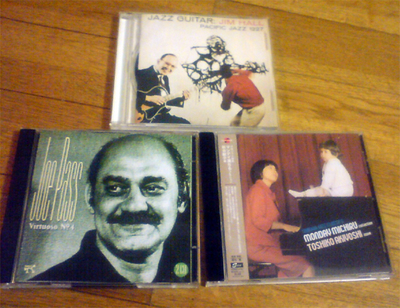
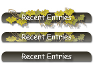

{kind=link}
・タイヤ４本交換
・ブレーキパッド交換
工賃などで締めて５万ふっとんだ…(･ω･｀lll)
今月も赤字です。
って悲しんでたら更に自動車税の時期に。。。
締めて自動車税４万ふっとび。。。
今月も貯金１桁台みたいな。。。( ´･ω･)━━( ´･ω)━━
2007年05月29日
・タイヤ４本交換
・ブレーキパッド交換
工賃などで締めて５万ふっとんだ…(･ω･｀lll)
今月も赤字です。
って悲しんでたら更に自動車税の時期に。。。
締めて自動車税４万ふっとび。。。
今月も貯金１桁台みたいな。。。( ´･ω･)━━( ´･ω)━━
2007年05月27日
目線は斜め下で道の端っこを背中を丸めて歩く。
↑これが妙に落ち着く、そんな今日この頃です。
半年に一度ぐらいにやってくるバイオリズムの崩れがぁぁあぁぁぁ
山谷山谷谷谷谷谷谷山谷山谷
↑この辺？
バイオリズムの崩れに拍車を掛けて俺の器量を越えたことを
考えさせられる出来事が・・・
自分の器量というか経験というか常日頃の考えの浅さがモロに。。
船越英一郎さんはデカイよな。。
自分の経験、考えでは対処できない問題、悩みにぶつかった時に
いつも宇宙から自分を見下ろして何て小さな悩みなんだって
言い聞かせるようにしてます。
でも、それは自分のグチャグチャな心理状態を整えることに効果があって
解決には至らないことを今日知った。
解決には結局のところ自分の器量や経験がモノをいいますね。
俺はまだまだお子チャマなわけだ・・・
話は変わって久しぶりにＣＤを買ってきた。

写真上
【JIM HOLL】PACIFIC JAZZ 1227
ジャズギターの人ですね。
偉いシンプルなギターで、聴く分には少し物足りない。
ギターの勉強には凄くいい。
写真左
【JOE PASS】Virtuozo No4
流し聴きには向かない。ギターの勉強には凄くいい。
楽譜もってるので、そのために買ってきた。枯葉も入ってる。
写真右
【秋吉敏子】渋谷ジャズ維新 マンディ満ちるコレクション
和ジャズって売りで視聴コーナーに置いてあって聴いてみたら
凄くいい！！ってことで買い。
日本にこんな人がいたんだって感動しまくり。
和ってテイストもしっかり感じとれます。オススメ。
2007年05月24日
細木カズコによると
去年大殺界、今年大殺界抜ける。
去年の方が良かったヨ！！
フラれまくりですｗｗ
困ったな(´･ω･`)/
ランニングしてません！！
なんかの番組で格差社会を取り上げていて
年収いくら以下は低所得者の部類に入るとか
言ってたんだけどオラ負け組みだ。。。
いい歳になってきたしちょっと真剣に考えんとですね・・・
2007年05月21日
全身痛いです。
高校時代のバスケ部友達に誘われ京橋までバスケをやりに。
まだまだ動けるという根拠無しの自信を武器にがんばったんですが、
やっぱり根拠無しでした。
走れない。飛べない。ドリブルできない。シュート入らない・・・
自信喪失＆自我崩壊みたいな・・・
んで、このままでは悔しいというか、もう一度あの頃の動きで
自己満足の世界に浸りたいって気持ちから日常トレーニング開始！！
とりあえずは、河川敷ランニングから始めようと思います。
めざせマッチョマン！
2007年05月19日
ブレーキがキーキーシャーシャー言い出したので入院。
ブレーキパッド交換だな。
ついでにガラスコーティングしてツヤ出したいと思ったけど
新車じゃないと余り効果ないらしい。
こまめにワックスした方が良いらしいです。
中古で買ってそろそろ１年だけど全く飽きが来ないです。
さすがラシーン様！！燃費悪いけど。。
うちの近くというか、兵庫県内ってやたらラシーンを見かけることが
多いんだけどなんなんでしょうかね？
奈良にいた時も、京都にいた時も、東京にいた時もほとんど
見かけることがない車だったんだけど、兵庫はやたらラシーンが
走ってます。
本日の作業
■PHP化とＴＯＰデザインを全テンプレートに適用
ブログって地味に月別とか個別エントリーとかコメントとか画面があって
それぞれにテンプレートがあるわけで全部に適用するのは
結構だるい。。。
レイアウト崩れはこれにてなくなったはず！多分。
■PHP化を活かして別テンプレート分け
左のメニュー、右のメニュー、フッター部分を別テンプレートに分ける。
そんでもって、
<?php readfile("<$MTBlogURL$>rightmenu.html"); ?>
って感じで呼び出す。
これによってテンプレート分けした部分の更新はすっごく楽になった！
■アップロード・パスの変更（管理画面）
画像投稿時に選択するアップロード先パスをデフォルトで指定。楽チンになる。
１．画像のアップロード先を指定する
「mt」のディレクトリにある「tmpl/cms/upload.tmpl」を開きます。
これの52行目、
<input name="extra_path" id="extra_path"value="******"/>
value="******"を追加
２．「HTMLを表示」を指定する
同じく、「/tmpl/cms」ディレクトリにある、「upload_complete.tmpl」を開きます。
これの110行目、
<label><input type="radio"
name="new_entry" value="0"checked="checked">
checked="checked"を追加
３．「この画像のサムネイルを作る」にチェックを入れる
同じく「upload_complete.tmpl」の117行目、
<p><label><input type="checkbox"
name="thumb" value="1" checked="checked">
checked="checked"を追加
joe passが熱い。
joe pass(youtube)
最近６年ぐらい前に買った楽譜を引っ張り出してきてひたすら練習。
俺はjoe passになれるのか。。。
ジャズギターはカッコいいな。
ヤングギター毎月買ってた頃のギターへの憧れを思い出す。
2007年05月16日
■環境設定→どっか忘れたが拡張子設定を
html→phpに変更
■各テンプレートの一行目の宣言部を変更
<? echo('<?xml version="1.0" encoding="<$MTPublishCharset$>"?>') ?>
■mt-config.cgiに以下追加
※さくらインターネット鯖の場合）
HTMLUmask 0022
DirUmask 0022
HTMLPerms 0777
その他メモ
HTMLソースを投稿するとエライこっちゃになるんで
そのまま表示してくれるプラグイン↓を追加
とても便利。
結構形になってきたぽ。
あとは、微調整とかTOP以外で崩れまくってるレイアウトを調整とか。
残り
・PHP化
・ページめくりのプラグイン追加
・管理画面をイジル。
・携帯用にmt4iプラグイン追加
・メール投稿可能に
まだまだやることあるな。。
Recent Entry←実はSeach部分
間違ってるけど気にしない。
ちょっと統一感無い感じだけど気にしない。
今日はここで力尽きる。
といいつつ進める。

３案考えたけど結局この形にしました。
レイアウト崩れてるけど気にしない！！
ブログデザインの配色を変更しようと思ったんだけど、
WEBセーフカラーって難問にぶつかった。
photoshopでせっせと色を選んでやってたけど、
WEBセーフカラーってやつで完全に色を再現できないんだな。。
気にしないで進めるか。。。
ちょっとラシクなってきた？
ブログ設置できたんで今度はカスタマズに挑戦！！
っといきたいところだが、デザインがぁぁぁぁぁぁぁ
決まらない。
というかデザインできない(´･ω･`)/~~
とまあがんばってみる。


{kind=link}
{kind=link}
{kind=link}
{kind=link}
{kind=link}